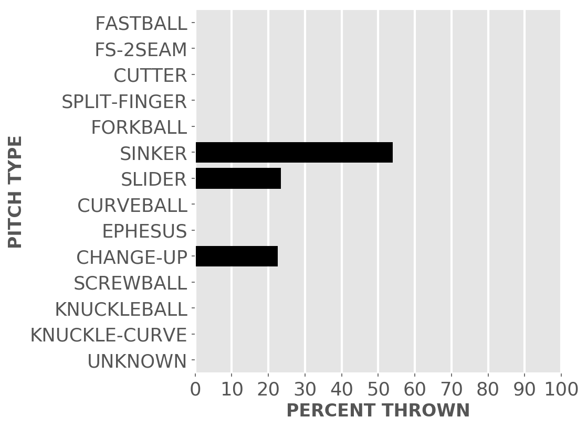

Chicago baseball
White Sox
A little-more-than-casual but not-very-wonky statistical look at the current season
Plenty of seats available to watch the kids learn how to play in the big league.
Updated Monday, April 19, at 8:11 a.m. Pybaseball gathers these from Baseball-reference.com.
Games
JUMP TO TOP | BATTERS | PITCHERS
On Sunday, Apr 18 , the Sox played a doubleheader at the Red Sox.
-- In the first game, the Sox won 3 to 2 in 7 innings. The winning pitcher was Keuchel, losing pitcher was Houck. Save: Hendriks.
-- In the second game, the Sox won 5 to 1 in 7 innings. The winning pitcher was Foster, losing pitcher was Perez. Save: None.
Next scheduled game: Monday, Apr 19, an away game at the Red Sox.
Summary results by team
| Team | Wins | Loses | Avg. Sox runs | Avg. runs against |
|---|---|---|---|---|
| Angels | 1 | 3 | 5.5 | 6.0 |
| Indians | 2 | 2 | 3.5 | 2.25 |
| Mariners | 2 | 1 | 6.67 | 4.0 |
| Red Sox | 2 | 1 | 4.0 | 3.33 |
| Royals | 1 | 1 | 4.5 | 2.0 |
Batters
JUMP TO TOP | GAMES | PITCHERS
Click the link under a player's name to get up-to-speed on a player at bat.
Jose Abreu #79, 1B
| Status (A = active) | A |
| Bats/Throws | R/R |
| Plate appearances | 71 |
| At bats | 60 |
| Hits | 12 |
| Home runs | 2 |
| Batting Avg. | 0.2 |

| Runs | 6 |
| RBI | 11 |
| On-base percent | 0.31 |
| Weighted OBP | 0.292 |
| Slugging % | 0.333 |
| Stolen bases | 1 |
| Caught stealing | 0 |
Other measures
| Weighted runs above avg. (wRAA) | -1.0 |
| Runs Above Replacement (RAR) | 1.6 |
| Fielding RAR | 1.1 |
| Wins above replacement (WAR) | 0.2 |
Tim Anderson #7, SS
| Status (A = active) | A |
| Bats/Throws | R/R |
| Plate appearances | 29 |
| At bats | 29 |
| Hits | 9 |
| Home runs | 2 |
| Batting Avg. | 0.31 |

| Runs | 6 |
| RBI | 2 |
| On-base percent | 0.31 |
| Weighted OBP | 0.357 |
| Slugging % | 0.517 |
| Stolen bases | 1 |
| Caught stealing | 0 |
Other measures
| Weighted runs above avg. (wRAA) | 1.1 |
| Runs Above Replacement (RAR) | 2.2 |
| Fielding RAR | -0.4 |
| Wins above replacement (WAR) | 0.2 |
Zack Collins #21, C
| Status (A = active) | A |
| Bats/Throws | L/R |
| Plate appearances | 33 |
| At bats | 30 |
| Hits | 4 |
| Home runs | 1 |
| Batting Avg. | 0.133 |

| Runs | 2 |
| RBI | 5 |
| On-base percent | 0.212 |
| Weighted OBP | 0.218 |
| Slugging % | 0.267 |
| Stolen bases | 0 |
| Caught stealing | 0 |
Other measures
| Weighted runs above avg. (wRAA) | -2.4 |
| Runs Above Replacement (RAR) | 0.0 |
| Fielding RAR | 0.7 |
| Wins above replacement (WAR) | 0.0 |
Adam Eaton #12, RF
| Status (A = active) | A |
| Bats/Throws | L/L |
| Plate appearances | 62 |
| At bats | 52 |
| Hits | 13 |
| Home runs | 3 |
| Batting Avg. | 0.25 |
| Runs | 12 |
| RBI | 11 |
| On-base percent | 0.371 |
| Weighted OBP | 0.363 |
| Slugging % | 0.442 |
| Stolen bases | 1 |
| Caught stealing | 0 |
Other measures
| Weighted runs above avg. (wRAA) | 2.6 |
| Runs Above Replacement (RAR) | 5.4 |
| Fielding RAR | -0.1 |
| Wins above replacement (WAR) | 0.6 |
Leury Garcia #28, OF
| Status (A = active) | A |
| Bats/Throws | S/R |
| Plate appearances | 39 |
| At bats | 37 |
| Hits | 6 |
| Home runs | 0 |
| Batting Avg. | 0.162 |

| Runs | 6 |
| RBI | 2 |
| On-base percent | 0.184 |
| Weighted OBP | 0.178 |
| Slugging % | 0.216 |
| Stolen bases | 1 |
| Caught stealing | 0 |
Other measures
| Weighted runs above avg. (wRAA) | -4.1 |
| Runs Above Replacement (RAR) | -1.9 |
| Fielding RAR | 0.1 |
| Wins above replacement (WAR) | -0.2 |
Yasmani Grandal #24, C
| Status (A = active) | A |
| Bats/Throws | S/R |
| Plate appearances | 42 |
| At bats | 33 |
| Hits | 5 |
| Home runs | 1 |
| Batting Avg. | 0.152 |

| Runs | 5 |
| RBI | 7 |
| On-base percent | 0.333 |
| Weighted OBP | 0.3 |
| Slugging % | 0.303 |
| Stolen bases | 0 |
| Caught stealing | 0 |
Other measures
| Weighted runs above avg. (wRAA) | -0.3 |
| Runs Above Replacement (RAR) | 1.9 |
| Fielding RAR | -0.1 |
| Wins above replacement (WAR) | 0.2 |
Billy Hamilton #0, CF
| Status (A = active) | D10 |
| Bats/Throws | S/R |
| Plate appearances | 13 |
| At bats | 11 |
| Hits | 3 |
| Home runs | 0 |
| Batting Avg. | 0.273 |

| Runs | 2 |
| RBI | 1 |
| On-base percent | 0.385 |
| Weighted OBP | 0.311 |
| Slugging % | 0.273 |
| Stolen bases | 2 |
| Caught stealing | 0 |
Other measures
| Weighted runs above avg. (wRAA) | 0.0 |
| Runs Above Replacement (RAR) | 0.9 |
| Fielding RAR | -0.1 |
| Wins above replacement (WAR) | 0.1 |
Jake Lamb #23, 3B
| Status (A = active) | A |
| Bats/Throws | L/R |
| Plate appearances | 12 |
| At bats | 9 |
| Hits | 1 |
| Home runs | 0 |
| Batting Avg. | 0.111 |

| Runs | 2 |
| RBI | 0 |
| On-base percent | 0.333 |
| Weighted OBP | 0.247 |
| Slugging % | 0.111 |
| Stolen bases | 0 |
| Caught stealing | 0 |
Other measures
| Weighted runs above avg. (wRAA) | -0.6 |
| Runs Above Replacement (RAR) | -0.6 |
| Fielding RAR | -0.4 |
| Wins above replacement (WAR) | -0.1 |
Nick Madrigal #1, 2B
| Status (A = active) | A |
| Bats/Throws | R/R |
| Plate appearances | 52 |
| At bats | 46 |
| Hits | 14 |
| Home runs | 0 |
| Batting Avg. | 0.304 |
| Runs | 9 |
| RBI | 3 |
| On-base percent | 0.365 |
| Weighted OBP | 0.321 |
| Slugging % | 0.348 |
| Stolen bases | 1 |
| Caught stealing | 1 |
Other measures
| Weighted runs above avg. (wRAA) | 0.5 |
| Runs Above Replacement (RAR) | 1.2 |
| Fielding RAR | -0.9 |
| Wins above replacement (WAR) | 0.1 |
Danny Mendick #20, SS
| Status (A = active) | A |
| Bats/Throws | R/R |
| Plate appearances | 21 |
| At bats | 16 |
| Hits | 6 |
| Home runs | 0 |
| Batting Avg. | 0.375 |
| Runs | 2 |
| RBI | 2 |
| On-base percent | 0.524 |
| Weighted OBP | 0.419 |
| Slugging % | 0.375 |
| Stolen bases | 0 |
| Caught stealing | 0 |
Other measures
| Weighted runs above avg. (wRAA) | 1.8 |
| Runs Above Replacement (RAR) | 2.7 |
| Fielding RAR | 0.5 |
| Wins above replacement (WAR) | 0.3 |
Yermin Mercedes #73, C
| Status (A = active) | A |
| Bats/Throws | R/R |
| Plate appearances | 57 |
| At bats | 53 |
| Hits | 22 |
| Home runs | 4 |
| Batting Avg. | 0.415 |
| Runs | 7 |
| RBI | 12 |
| On-base percent | 0.456 |
| Weighted OBP | 0.501 |
| Slugging % | 0.717 |
| Stolen bases | 0 |
| Caught stealing | 0 |
Other measures
| Weighted runs above avg. (wRAA) | 8.7 |
| Runs Above Replacement (RAR) | 9.0 |
| Fielding RAR | |
| Wins above replacement (WAR) | 0.9 |
Yoan Moncada #10, 3B
| Status (A = active) | A |
| Bats/Throws | S/R |
| Plate appearances | 66 |
| At bats | 55 |
| Hits | 11 |
| Home runs | 1 |
| Batting Avg. | 0.2 |

| Runs | 6 |
| RBI | 7 |
| On-base percent | 0.318 |
| Weighted OBP | 0.278 |
| Slugging % | 0.273 |
| Stolen bases | 0 |
| Caught stealing | 0 |
Other measures
| Weighted runs above avg. (wRAA) | -1.6 |
| Runs Above Replacement (RAR) | 1.5 |
| Fielding RAR | 1.1 |
| Wins above replacement (WAR) | 0.2 |
Luis Robert #88, CF
| Status (A = active) | A |
| Bats/Throws | R/R |
| Plate appearances | 69 |
| At bats | 63 |
| Hits | 18 |
| Home runs | 1 |
| Batting Avg. | 0.286 |

| Runs | 6 |
| RBI | 5 |
| On-base percent | 0.333 |
| Weighted OBP | 0.342 |
| Slugging % | 0.46 |
| Stolen bases | 2 |
| Caught stealing | 0 |
Other measures
| Weighted runs above avg. (wRAA) | 1.8 |
| Runs Above Replacement (RAR) | 6.2 |
| Fielding RAR | 1.0 |
| Wins above replacement (WAR) | 0.6 |
Andrew Vaughn #25, 1B
| Status (A = active) | A |
| Bats/Throws | R/R |
| Plate appearances | 35 |
| At bats | 28 |
| Hits | 5 |
| Home runs | 0 |
| Batting Avg. | 0.179 |

| Runs | 4 |
| RBI | 1 |
| On-base percent | 0.343 |
| Weighted OBP | 0.299 |
| Slugging % | 0.286 |
| Stolen bases | 0 |
| Caught stealing | 0 |
Other measures
| Weighted runs above avg. (wRAA) | -0.3 |
| Runs Above Replacement (RAR) | -0.3 |
| Fielding RAR | -1.0 |
| Wins above replacement (WAR) | 0.0 |
Pitchers
Click the link under a player's name to get acquainted with who's on the mound. Click here for a description of these stats and more.
Aaron Bummer #39, P
| Status (A = active) | A |
| Bats/Throws | L/L |
| Wins | 0 |
| Losses | 1 |
| ERA | 2.08 |
| Caught stealing | 0 |
| Complete games | 0 |
| Shutouts | 0 |
| Saves | 0 |
| Blown saves | 1 |
Pitch types

Fastball = Four Seam and Unclassified Fastballs; FS-2seam = Two Seam Fastballs; Ephesuses are a really slow ball
| Average innings pitched | 0.7 |
| Strikeouts per 9 innings | 14.54 |
| Walks per 9 innings | 8.31 |
| Walks, hits per inning (WHIP) | 2.08 |
| Percent left on base | 70.0 |
| Percent first pitch strike | 39.1 |
Other measures
| Avg. run support | 0.0 |
| Opponents batting average | 0.278 |
| Batting avg. on balls in play | 0.455 |
| Fielding independent pitching | 3.33 |
| Win probability added (WPA) | -0.63 |
| Runs above replacement | 0.4 |
| WAR | 0.0 |
Dylan Cease #84, P
| Status (A = active) | A |
| Bats/Throws | R/R |
| Wins | 0 |
| Losses | 0 |
| ERA | 3.86 |
| Caught stealing | 3 |
| Complete games | 0 |
| Shutouts | 0 |
| Saves | 0 |
| Blown saves | 0 |
Pitch types

Fastball = Four Seam and Unclassified Fastballs; FS-2seam = Two Seam Fastballs; Ephesuses are a really slow ball
| Average innings pitched | 4.7 |
| Strikeouts per 9 innings | 9.64 |
| Walks per 9 innings | 5.79 |
| Walks, hits per inning (WHIP) | 1.71 |
| Percent left on base | 79.6 |
| Percent first pitch strike | 42.9 |
Other measures
| Avg. run support | 6.0 |
| Opponents batting average | 0.278 |
| Batting avg. on balls in play | 0.368 |
| Fielding independent pitching | 3.82 |
| Win probability added (WPA) | 0.05 |
| Runs above replacement | 1.6 |
| WAR | 0.2 |
Garrett Crochet #45, P
| Status (A = active) | A |
| Bats/Throws | L/L |
| Wins | 0 |
| Losses | 2 |
| ERA | 1.59 |
| Caught stealing | 0 |
| Complete games | 0 |
| Shutouts | 0 |
| Saves | 0 |
| Blown saves | 0 |
Pitch types

Fastball = Four Seam and Unclassified Fastballs; FS-2seam = Two Seam Fastballs; Ephesuses are a really slow ball
| Average innings pitched | 0.9 |
| Strikeouts per 9 innings | 11.12 |
| Walks per 9 innings | 3.18 |
| Walks, hits per inning (WHIP) | 1.41 |
| Percent left on base | 50.0 |
| Percent first pitch strike | 63.0 |
Other measures
| Avg. run support | 3.0 |
| Opponents batting average | 0.24 |
| Batting avg. on balls in play | 0.333 |
| Fielding independent pitching | 1.69 |
| Win probability added (WPA) | -0.21 |
| Runs above replacement | 2.2 |
| WAR | 0.2 |
Matt Foster #63, P
| Status (A = active) | A |
| Bats/Throws | R/R |
| Wins | 1 |
| Losses | 1 |
| ERA | 13.5 |
| Caught stealing | 0 |
| Complete games | 0 |
| Shutouts | 0 |
| Saves | 0 |
| Blown saves | 1 |
Pitch types

Fastball = Four Seam and Unclassified Fastballs; FS-2seam = Two Seam Fastballs; Ephesuses are a really slow ball
| Average innings pitched | 0.7 |
| Strikeouts per 9 innings | 15.43 |
| Walks per 9 innings | 3.86 |
| Walks, hits per inning (WHIP) | 1.93 |
| Percent left on base | 26.3 |
| Percent first pitch strike | 62.5 |
Other measures
| Avg. run support | 0.0 |
| Opponents batting average | 0.318 |
| Batting avg. on balls in play | 0.462 |
| Fielding independent pitching | 3.75 |
| Win probability added (WPA) | -0.69 |
| Runs above replacement | 0.5 |
| WAR | 0.1 |
Lucas Giolito #27, P
| Status (A = active) | A |
| Bats/Throws | R/R |
| Wins | 1 |
| Losses | 0 |
| ERA | 2.55 |
| Caught stealing | 3 |
| Complete games | 0 |
| Shutouts | 0 |
| Saves | 0 |
| Blown saves | 0 |
Pitch types

Fastball = Four Seam and Unclassified Fastballs; FS-2seam = Two Seam Fastballs; Ephesuses are a really slow ball
| Average innings pitched | 5.7 |
| Strikeouts per 9 innings | 13.25 |
| Walks per 9 innings | 2.55 |
| Walks, hits per inning (WHIP) | 0.79 |
| Percent left on base | 71.4 |
| Percent first pitch strike | 58.8 |
Other measures
| Avg. run support | 8.0 |
| Opponents batting average | 0.143 |
| Batting avg. on balls in play | 0.222 |
| Fielding independent pitching | 1.74 |
| Win probability added (WPA) | 0.44 |
| Runs above replacement | 6.5 |
| WAR | 0.8 |
Liam Hendriks #31, P
| Status (A = active) | A |
| Bats/Throws | R/R |
| Wins | 0 |
| Losses | 0 |
| ERA | 4.26 |
| Caught stealing | 0 |
| Complete games | 0 |
| Shutouts | 0 |
| Saves | 2 |
| Blown saves | 1 |
Pitch types

Fastball = Four Seam and Unclassified Fastballs; FS-2seam = Two Seam Fastballs; Ephesuses are a really slow ball
| Average innings pitched | 1.0 |
| Strikeouts per 9 innings | 12.79 |
| Walks per 9 innings | 1.42 |
| Walks, hits per inning (WHIP) | 0.95 |
| Percent left on base | 93.8 |
| Percent first pitch strike | 80.0 |
Other measures
| Avg. run support | 5.0 |
| Opponents batting average | 0.208 |
| Batting avg. on balls in play | 0.231 |
| Fielding independent pitching | 4.84 |
| Win probability added (WPA) | 0.3 |
| Runs above replacement | -0.6 |
| WAR | -0.1 |
Codi Heuer #65, P
| Status (A = active) | A |
| Bats/Throws | R/R |
| Wins | 1 |
| Losses | 1 |
| ERA | 4.32 |
| Caught stealing | 0 |
| Complete games | 0 |
| Shutouts | 0 |
| Saves | 0 |
| Blown saves | 0 |
Pitch types
Fastball = Four Seam and Unclassified Fastballs; FS-2seam = Two Seam Fastballs; Ephesuses are a really slow ball
| Average innings pitched | 1.3 |
| Strikeouts per 9 innings | 12.96 |
| Walks per 9 innings | 1.08 |
| Walks, hits per inning (WHIP) | 1.32 |
| Percent left on base | 85.4 |
| Percent first pitch strike | 47.1 |
Other measures
| Avg. run support | 7.0 |
| Opponents batting average | 0.303 |
| Batting avg. on balls in play | 0.421 |
| Fielding independent pitching | 3.7 |
| Win probability added (WPA) | 0.31 |
| Runs above replacement | 0.6 |
| WAR | 0.1 |
Dallas Keuchel #60, P
| Status (A = active) | A |
| Bats/Throws | L/L |
| Wins | 1 |
| Losses | 0 |
| ERA | 5.68 |
| Caught stealing | 4 |
| Complete games | 0 |
| Shutouts | 0 |
| Saves | 0 |
| Blown saves | 0 |
Pitch types

Fastball = Four Seam and Unclassified Fastballs; FS-2seam = Two Seam Fastballs; Ephesuses are a really slow ball
| Average innings pitched | 4.8 |
| Strikeouts per 9 innings | 4.74 |
| Walks per 9 innings | 3.32 |
| Walks, hits per inning (WHIP) | 1.37 |
| Percent left on base | 57.0 |
| Percent first pitch strike | 54.3 |
Other measures
| Avg. run support | 17.0 |
| Opponents batting average | 0.26 |
| Batting avg. on balls in play | 0.267 |
| Fielding independent pitching | 5.37 |
| Win probability added (WPA) | -0.32 |
| Runs above replacement | -0.3 |
| WAR | 0.0 |
Michael Kopech #34, P
| Status (A = active) | A |
| Bats/Throws | R/R |
| Wins | 1 |
| Losses | 0 |
| ERA | 1.69 |
| Caught stealing | 1 |
| Complete games | 0 |
| Shutouts | 0 |
| Saves | 0 |
| Blown saves | 0 |
Pitch types

Fastball = Four Seam and Unclassified Fastballs; FS-2seam = Two Seam Fastballs; Ephesuses are a really slow ball
| Average innings pitched | 2.0 |
| Strikeouts per 9 innings | 14.34 |
| Walks per 9 innings | 3.38 |
| Walks, hits per inning (WHIP) | 0.66 |
| Percent left on base | 71.4 |
| Percent first pitch strike | 67.5 |
Other measures
| Avg. run support | 4.0 |
| Opponents batting average | 0.083 |
| Batting avg. on balls in play | 0.158 |
| Fielding independent pitching | 1.04 |
| Win probability added (WPA) | 0.44 |
| Runs above replacement | 4.6 |
| WAR | 0.5 |
Lance Lynn #33, P
| Status (A = active) | D10 |
| Bats/Throws | S/R |
| Wins | 1 |
| Losses | 1 |
| ERA | 0.92 |
| Caught stealing | 3 |
| Complete games | 1 |
| Shutouts | 1 |
| Saves | 0 |
| Blown saves | 0 |
Pitch types

Fastball = Four Seam and Unclassified Fastballs; FS-2seam = Two Seam Fastballs; Ephesuses are a really slow ball
| Average innings pitched | 6.4 |
| Strikeouts per 9 innings | 12.36 |
| Walks per 9 innings | 0.92 |
| Walks, hits per inning (WHIP) | 0.92 |
| Percent left on base | 84.3 |
| Percent first pitch strike | 67.5 |
Other measures
| Avg. run support | 9.0 |
| Opponents batting average | 0.213 |
| Batting avg. on balls in play | 0.319 |
| Fielding independent pitching | 1.32 |
| Win probability added (WPA) | 0.27 |
| Runs above replacement | 7.6 |
| WAR | 0.9 |
Evan Marshall #43, P
| Status (A = active) | A |
| Bats/Throws | R/R |
| Wins | 0 |
| Losses | 1 |
| ERA | 5.4 |
| Caught stealing | 0 |
| Complete games | 0 |
| Shutouts | 0 |
| Saves | 0 |
| Blown saves | 2 |
Pitch types

Fastball = Four Seam and Unclassified Fastballs; FS-2seam = Two Seam Fastballs; Ephesuses are a really slow ball
| Average innings pitched | 1.2 |
| Strikeouts per 9 innings | 7.56 |
| Walks per 9 innings | 2.16 |
| Walks, hits per inning (WHIP) | 1.44 |
| Percent left on base | 66.0 |
| Percent first pitch strike | 56.8 |
Other measures
| Avg. run support | 1.0 |
| Opponents batting average | 0.286 |
| Batting avg. on balls in play | 0.333 |
| Fielding independent pitching | 3.7 |
| Win probability added (WPA) | -0.13 |
| Runs above replacement | 0.8 |
| WAR | 0.1 |
Carlos Rodon #55, P
| Status (A = active) | A |
| Bats/Throws | L/L |
| Wins | 2 |
| Losses | 0 |
| ERA | 0.0 |
| Caught stealing | 2 |
| Complete games | 1 |
| Shutouts | 1 |
| Saves | 0 |
| Blown saves | 0 |
Pitch types

Fastball = Four Seam and Unclassified Fastballs; FS-2seam = Two Seam Fastballs; Ephesuses are a really slow ball
| Average innings pitched | 7.0 |
| Strikeouts per 9 innings | 10.29 |
| Walks per 9 innings | 1.93 |
| Walks, hits per inning (WHIP) | 0.36 |
| Percent left on base | 100.0 |
| Percent first pitch strike | 54.0 |
Other measures
| Avg. run support | 14.0 |
| Opponents batting average | 0.045 |
| Batting avg. on balls in play | 0.071 |
| Fielding independent pitching | 2.1 |
| Win probability added (WPA) | 0.32 |
| Runs above replacement | 4.3 |
| WAR | 0.5 |
Jose Ruiz #66, P
| Status (A = active) | A |
| Bats/Throws | R/R |
| Wins | 0 |
| Losses | 1 |
| ERA | 3.86 |
| Caught stealing | 0 |
| Complete games | 0 |
| Shutouts | 0 |
| Saves | 0 |
| Blown saves | 0 |
Pitch types

Fastball = Four Seam and Unclassified Fastballs; FS-2seam = Two Seam Fastballs; Ephesuses are a really slow ball
| Average innings pitched | 0.8 |
| Strikeouts per 9 innings | 5.79 |
| Walks per 9 innings | 5.79 |
| Walks, hits per inning (WHIP) | 1.07 |
| Percent left on base | 60.0 |
| Percent first pitch strike | 63.2 |
Other measures
| Avg. run support | 3.0 |
| Opponents batting average | 0.125 |
| Batting avg. on balls in play | 0.154 |
| Fielding independent pitching | 3.75 |
| Win probability added (WPA) | -0.15 |
| Runs above replacement | 0.2 |
| WAR | 0.0 |
JUMP TO TOP